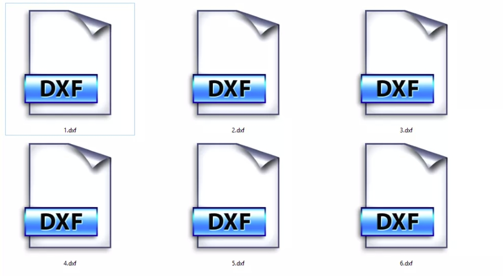

1.1.
介绍
1.2.
快速开始
1.2.1.
软件安装
1.2.2.
软件升级
1.2.3.
生成代码
1.3.
代码生成
1.3.1.
基本参数
1.3.2.
高级参数
1.3.3.
坐标转换
1.4.
凸轮绘制
1.4.1.
XY 点位文件
1.4.2.
CAM 数据文件
1.4.3.
CAM 图形变换
1.5.
曲线分析
1.5.1.
凸轮转升程曲线
1.5.2.
升程转凸轮曲线
1.5.3.
速度转升程曲线
1.6.
误差补偿
1.6.1.
直径误差分析
1.6.2.
CAM 误差叠加
1.6.3.
CAM 误差对比
1.6.4.
加工误差修正
1.7.
DXF 工具
1.7.1.
DXF 对比
1.7.2.
DXF 离散化
1.7.3.
DXF 拟合圆弧
1.8.
故障排除
本书使用 HonKit 发布
DXF 工具
DXF 工具

Cam Grinding
的大部分对于文件的操作都是基于 DXF 格式的，为了方便操作，
Cam Grinding
内置了一系列 DXF 文件处理工具，包含以下功能：
DXF 对比
：将多个 DXF 文件叠放在一起观察他们的区别。
DXF 离散化
：将 DXF 文件转换为离散点化的 DXF 文件。
DXF 拟合圆弧
：将离散点化的 DXF 文件转换为拟合圆弧的 DXF 文件。
results matching "
"
No results matching "
"